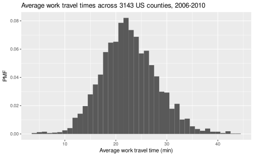
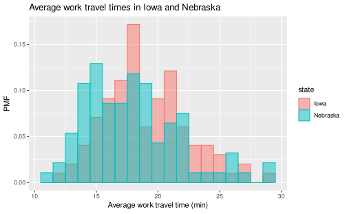
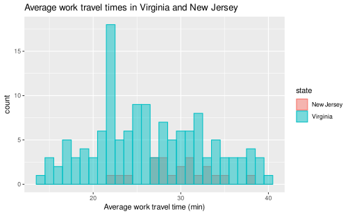
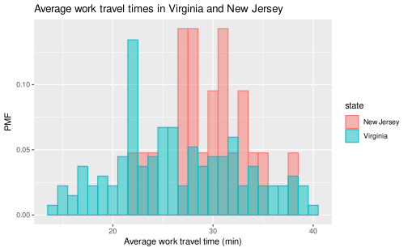

3.1 Probability mass functions
3.1.1 Example dataset
We use an example dataset of the average time it takes for people to commute to work across 3143 counties in the United States (collected between 2006-2010) to help illustrate the meaning and uses of the probability mass function. The frequency histogram for these times can be plotted using the following code snippet:
county_complete %>%
ggplot(mapping = aes(x = mean_work_travel)) +
geom_histogram(binwidth = 1)3.1.2 PMFs
The probability mass function (PMF) represents a distribution by sorting the data into bins (much like the frequency histogram) and then associates a probability with each bin in the distribution. A probability is a frequency expressed as a fraction of the sample size n. Therefore we can directly convert a frequency histogram to a PMF by dividing the count in each bin by the sample size n. This process is called normalization.
As an example, consider the following short sample,
1 2 2 3 5If we choose a binwidth of 1, then we get a frequency histogram that looks like this:
There are 5 observations in this sample. So, we can convert to a PMF by dividing the count within each bin by 5, getting a histogram that looks like this:

The relative shape stays the same, but compare the values along the vertical axis between the two figures. You’ll find that they are no longer integers and are instead probabilities. The normalization procedure (dividing by 5) guarantees that adding together the probabilities of all bins will equal 1. For this example, we find that the probability of drawing the number 1 is 0.2, drawing 2 is 0.4, drawing 3 is 0.2, drawing 4 is 0, and drawing 5 is 0.2. That is the biggest difference between a frequency histogram and a PMF, the frequency histogram maps from values to integer counters, while the PMF maps from values to fractional probabilities.
3.1.3 Plotting PMFs
The syntax for plotting a PMF using ggplot2 is nearly identical to what you would use to create a frequency histogram.
The one modification is that you need to include y = ..density.. inside aes().
As a simple example, let’s take the full distribution of the average work travel times from earlier and plot it as a PMF:
county_complete %>%
ggplot(mapping = aes(x = mean_work_travel, y = ..density..)) +
geom_histogram(binwidth = 1)
Let’s do a comparison to show how one might use a PMF for analysis. For example, we could ask if two midwestern states such as Nebraska and Iowa have the same distribution of work travel times, or if there is a meaningful difference between the two. First, let’s filter the dataset to only include these two states:
nebraska_iowa <- county_complete %>%
filter(state == "Iowa" | state == "Nebraska")Now let’s plot the frequency histogram:
nebraska_iowa %>%
ggplot() +
geom_histogram(
mapping = aes(
x = mean_work_travel,
fill = state,
color = state
),
position = "identity",
alpha = 0.5,
binwidth = 1
)The position = "identity" input overlaps the two distributions (instead of stacking them) and alpha = 0.5 makes the distributions translucent, so that you can see both despite the overlap.
On our first glance, it looks like the center of the Nebraska times is lower than the center of the Iowa times, and that both have a long tail on the right-hand side.
However, if we do a count summary,
nebraska_iowa %>%
count(state)| state | n |
|---|---|
| Alabama | 0 |
| Alaska | 0 |
| Arizona | 0 |
| Arkansas | 0 |
| California | 0 |
| Colorado | 0 |
| Connecticut | 0 |
| Delaware | 0 |
| District of Columbia | 0 |
| Florida | 0 |
| Georgia | 0 |
| Hawaii | 0 |
| Idaho | 0 |
| Illinois | 0 |
| Indiana | 0 |
| Iowa | 99 |
| Kansas | 0 |
| Kentucky | 0 |
| Louisiana | 0 |
| Maine | 0 |
| Maryland | 0 |
| Massachusetts | 0 |
| Michigan | 0 |
| Minnesota | 0 |
| Mississippi | 0 |
| Missouri | 0 |
| Montana | 0 |
| Nebraska | 93 |
| Nevada | 0 |
| New Hampshire | 0 |
| New Jersey | 0 |
| New Mexico | 0 |
| New York | 0 |
| North Carolina | 0 |
| North Dakota | 0 |
| Ohio | 0 |
| Oklahoma | 0 |
| Oregon | 0 |
| Pennsylvania | 0 |
| Rhode Island | 0 |
| South Carolina | 0 |
| South Dakota | 0 |
| Tennessee | 0 |
| Texas | 0 |
| Utah | 0 |
| Vermont | 0 |
| Virginia | 0 |
| Washington | 0 |
| West Virginia | 0 |
| Wisconsin | 0 |
| Wyoming | 0 |
we find that the two states do not have the exact same number of counties, although they are close in this particular example. Nonetheless, any comparisons should be done using a PMF in order to account for differences in the sample size. We use the following code to create a PMF plot:
nebraska_iowa %>%
ggplot() +
geom_histogram(
mapping = aes(
x = mean_work_travel,
y = ..density..,
fill = state,
color = state
),
position = "identity", alpha = 0.5, binwidth = 1
)
The trend that the center of the travel times in Nebraska is slightly smaller than in Iowa continues to hold even after converting to a PMF.
To provide an example where a PMF is clearly necessary, what if we compare New Jersey with Virginia? Virginia has many more counties than New Jersey:
county_complete %>%
filter(state == "New Jersey" | state == "Virginia") %>%
count(state)| state | n |
|---|---|
| Alabama | 0 |
| Alaska | 0 |
| Arizona | 0 |
| Arkansas | 0 |
| California | 0 |
| Colorado | 0 |
| Connecticut | 0 |
| Delaware | 0 |
| District of Columbia | 0 |
| Florida | 0 |
| Georgia | 0 |
| Hawaii | 0 |
| Idaho | 0 |
| Illinois | 0 |
| Indiana | 0 |
| Iowa | 0 |
| Kansas | 0 |
| Kentucky | 0 |
| Louisiana | 0 |
| Maine | 0 |
| Maryland | 0 |
| Massachusetts | 0 |
| Michigan | 0 |
| Minnesota | 0 |
| Mississippi | 0 |
| Missouri | 0 |
| Montana | 0 |
| Nebraska | 0 |
| Nevada | 0 |
| New Hampshire | 0 |
| New Jersey | 21 |
| New Mexico | 0 |
| New York | 0 |
| North Carolina | 0 |
| North Dakota | 0 |
| Ohio | 0 |
| Oklahoma | 0 |
| Oregon | 0 |
| Pennsylvania | 0 |
| Rhode Island | 0 |
| South Carolina | 0 |
| South Dakota | 0 |
| Tennessee | 0 |
| Texas | 0 |
| Utah | 0 |
| Vermont | 0 |
| Virginia | 134 |
| Washington | 0 |
| West Virginia | 0 |
| Wisconsin | 0 |
| Wyoming | 0 |
As a result, comparing their frequency histograms gives you this:

The New Jersey distribution is dwarfed by the Virginia distribution and it makes it difficult to make comparisons. However, if we instead compare PMFs, we get this:

So, for example, we can now make statements like “a randomly selected resident in New Jersey is twice as likely as a randomly chosen resident in Virginia to have an average work travel time of 30 minutes.” The PMF allows for an “apples-to-apples” comparison of the average travel times.